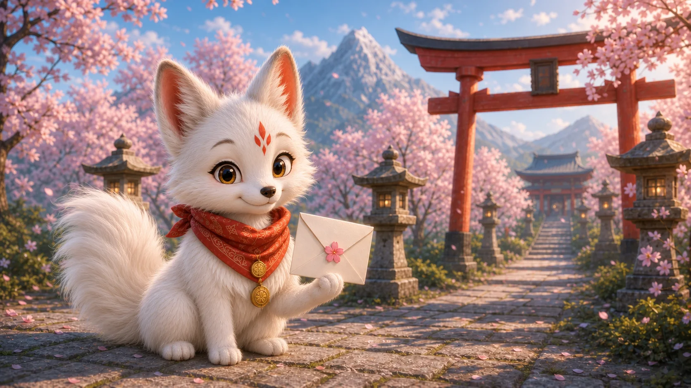

ГЛАВА 1 · ЭКРАН 1
Храм белых лис

Привет, мой друг!
Меня зовут Хоси. Я кицунэ, хранитель храма Инари.
Я люблю гулять по лесу, слушать шёпот листьев и собирать голубые огоньки.
Сегодня ты узнаешь, как прошёл мой день и какую тайну я нашла у ворот храма.
Поможешь мне на этом пути?